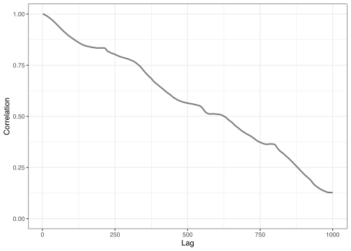
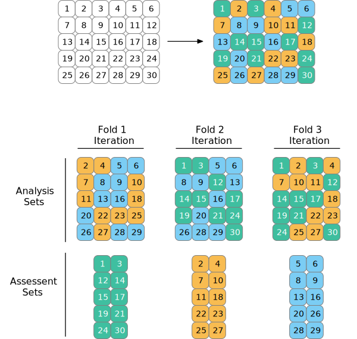
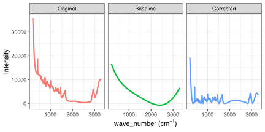
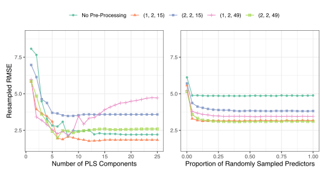
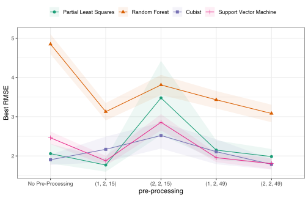
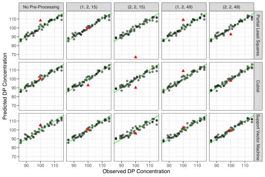
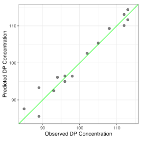

What They forgot to Tell You about Machine Learning with an Application to Pharmaceutical Manufacturing
(This is a preprint of an article submitted to a Pharmaceutical Statistics special nonclinical tutorial edition)
Introduction
It feels like machine learning is everywhere. Within data analysis circles, almost every discussion involves how artificial intelligence and machine learning can change our lives. ChatGPT (https://chat.openai.com) and similar applications have turned up the noise in the conversation, and many people believe it should be applied. TODO more here
This tutorial assumes that the reader has had some exposure to machine learning (a.k.a. predictive modeling or statistical learning) and related techniques such as resampling. If not, we suggest Hastie, Tibshirani, and Friedman (2017) for technical information and Kuhn and Johnson (2013) for practical descriptions focused on applying these methods. For deep learning methods, Goodfellow, Bengio, and Courville (2016) and Charu (2018) are good introductions.
This tutorial discusses more realistic approaches to using machine learning in preclinical applications, specifically Chemistry, Manufacturing, and Control (CMC) applications. The structure takes a relatively ordinary experimental problem (predicting drug concentration using spectroscopy) to frame a discussion about what machine learning can, can’t do, and probably should do. The idea is that most machine learning training materials are not holistic examinations of how the process actually works. While describing our analysis, we will highlight “what they forgot to tell you” about these tools.
For example, it might make sense to discuss what the term “machine learning” means and under what circumstances it is appropriate. Historically, it usually connotes a specific type of black-block model, such as a neural network or support vector machine. This leads us to our first what they forgot (WTF):
WTF
The idea of a “machine learning model” is more defined by the project’s goal than the type of model.
It is difficult to argue that ML models focus on making the most accurate prediction of a new sample based on historical data. From that point of view, any sufficiently complex model that performs sufficiently well. For example, a linear regression could fit this definition by including appropriate interactions or nonlinear terms, such as spline basis expansions. The models most representative of the current zeitgeist are sophisticated and impenetrable methods such as neural networks and boosted trees. However…
WTF
You probably don’t need a complex black-box machine learning model.
Why not? First, not all problems are purely prediction problems. Most black-box models used for ML, such as neural networks or tree ensembles, are excellent at prediction but poor at almost anything else. We have seen applications where simple two-factor experimental data were analyzed using the random forest ensemble method instead of a simple ANOVA model. When it comes to judging what predictors are important to one another, many machine learning models are not very applicable.
Another reason is the potential limitations of experimental data. Sometimes, there is not enough data to support fitting such a model. For example, if an unreplicated response surface design were available, training a model and characterizing its efficacy with so few data points would be difficult. Data size is a limitation, but there are other challenging data characteristics: irrelevant predictors, measurement system noise, censored values, multicollinearity, and others.
For some, there is a significant urge to fit complex ML models since they often are the best choice in completely different domains. These domains often have access to excessive amounts of non-tabular data. These are data structures that do not naturally fit into the traditional rectangular data format (e.g., spreadsheets or database tables). The most common examples are images, video, and text. Given a large amount of data and complex enough models, we have tools that recognize cats a picture or can ingest a prompt and appear to complete a task correctly, such as answering a question or writing code. These models are often complex deep-learning neural networks.
A disconnect occurs because most experimental data used in CMC applications are tabular (or can be made to be tabular).
WTF
Unless you are analyzing images, it is exceedingly unlikely that a deep-learning model is your best option.
There is considerable anecdotal evidence that highly complex neural networks may not perform well for reasonably sized tabular data sets. This is currently being examined more formally in the literature (Kadra et al. 2021; Gorishniy et al. 2021; Borisov et al. 2022; Shwartz-Ziv and Armon 2022). Experimental data in preclinical applications can often exhibit multicollinearity between predictors and data measured with error. For novel data sets, we often do not know which predictors have a relationship with the outcome, increasing the possibility that some irrelevant predictors will be used to fit the model. In general, neural networks do not thrive in these environments (Kuhn and Johnson 2013).
Simply put, deep learning models can be effective in specific scenarios but are inappropriate in many other situations.
In this tutorial, we will discuss the process of constructing ML models for a specific data set. This process starts with understanding the available data’s predictors and responses. After this initial understanding, we must then determine how to spend the data for the model-building process. Specifically, some data will need to be used to learn the generalizable characteristics that relate the predictors with the response (i.e., the training set). And other data will need to be used to assess how well the model predicts new data (i.e., the test set). After splitting the data, the predictors and/or the response may need to be preprocessed prior to modeling to enable better models to extract the predictive signal. After preprocessing, we can determine which types of predictive models to build. Each model has one or more parameters that determine how predictors are related to the response. In general, we do not know a priori which values of the tuning parameters are best. Therefore, we search a range of values to identify an optimal value. After identifying an optimal model, this model is then evaluated on the test data to determine if the model can be trusted to predict new yet-to-be-seen samples reliably.
Let’s look at a specific CMC application to facilitate the discussion further.
Experimental setting
The manufacturing process of a biological drug is complex and requires careful monitoring to ensure that the cells are efficiently creating the drug product. This process can be very challenging to systematically control since the incubation process can take many days, and cells are complex biological entities that are affected by slight changes in environmental conditions. To ensure that the bioreactor conditions are conducive to the cells producing product, key attributes are measured by sampling the contents of the bioreactor daily. If attributes are not in an acceptable range, then steps must be taken to alter the conditions of the bioreactor. Generally, the sooner the conditions can be adjusted, the better the quantity and quality of the final drug product. Measuring the attributes takes time. Therefore, there is usually a lag between the attribute measurements and the corresponding adjustment. This lag can lead to less and lower-quality products.
Raman spectroscopy is a tool that can measure chemical characteristics (i.e., a chemical fingerprint) of samples in real-time (Jesus, Löbenberg, and Bou-Chacra 2020; Esmonde-White, Cuellar, and Lewis 2022; Silge et al. 2022). Using the spectra in a predictive model of the characteristics of interest would enable real-time knowledge of and corresponding adjustments to the bioreactor, thus generating higher quality, larger volume drug product.
In the example outlined in this tutorial, several key input parameters were varied systematically across their operating ranges within each of the 60 small-scale bioreactors for producing a biological drug. Seven days after the start of the experiment, a sample was collected and analyzed by Raman spectroscopy. The concentration of the drug product in the sample was also measured. This analysis aims to understand how predictive Raman spectra can be of the drug product concentration. If there is a relationship, then the model could be used to signal if the bioreactor was insufficiently producing a product and prompting remedial steps to increase production.
Understanding the Data
The first step in any modeling process is to understand the available data.
WTF
The only way to be comfortable with your data is to never look at them.
In this application, there is one sample from each of the 60 bioreactors. Raman spectroscopy has been applied to each sample, and the drug product concentration has been measured. Figure 1 displays the original Raman spectra. From this figure, we can see that there is an initial downward trend towards the middle of the wavenumbers, then an upward trend towards the higher wavenumbers. The intensities are not randomly scattered. Instead, there is a relationship across wavenumbers with intensity. This relationship indicates that wavenumber intensities are correlated with each other. In fact, the correlation between the majority of adjacent wavenumbers is greater than 0.99.
To illustrate this more clearly, let’s examine the relationship among wavenumber measurements for the first sample. For the first sample, the first 3000 lags are created. To create a lag, the data is shifted by a specified number of rows to create a new variable. For example, to create the first lag, the wavenumber measurements are shifted over by one wavenumber. To create the second lag, the measurements are shifted by two wavenumberes, and so on. Figure 2 illustrates the correlation between each subsequent lag for the first 1000 lags. Clearly, close wavenumbers have a high correlation, whereas far wavenumbers have a low correlation. As we will see, understanding this characteristic will be very important when deciding how to pre-process the data prior to modeling and which models to train.

With such a large dimensional data set, it is difficult to investigate specific predictors visually. Additionally, the high degree of between-predictor correlations further increases the ability to investigate the data. In Section 5, we’ll look at specific data points using dimension reduction tools under different types of signal processing regimes.
In addition to understanding the predictors, we should also understand the characteristics of the response. Examining the response distribution can help determine if a transformation may be necessary or if there are samples that are unusual with respect to the majority of the data. Figure 3 presents the histogram of drug product concentration across the samples. For this data, the distribution is approximately symmetric and has a range of 85 to 115. Based on this figure, a transformation does not appear necessary, and there are no unusual samples.
Data Spending
The primary objective of predictive modeling is to use the existing data to develop a model that predicts new samples as accurately as possible. To achieve this objective, a process must be implemented that avoids overfitting to the existing data (Kuhn and Johnson 2013; Hawkins 2004). An overfit model is one that accurately predicts the response for the data on which the model was trained but does not accurately predict new data. To avoid overfitting, we must construct a model-building process that mimics the prediction process for new samples. One way to do this would be to split the data into training and test sets. A model could be constructed with the training set, then predictive performance could be evaluated with the test set.
WTF
Always have an independent data set that can contradict what you think you may know.
However, most predictive models must be constructed using a variety of tuning parameter values. The test set would then need to be evaluated multiple times to assess predictive performance. When the test set is evaluated multiple times, we are essentially finding a model that fits the test set. This process leads to overfitting, and the model performance cannot be trusted to evaluate the predictive performance on new samples accurately. Therefore, a single training/test split will not be adequate for building predictive models. Moreover, it is important to understand that the test set should only be used once to evaluate the final selected models.
Instead of a single training/test split, we need a process that can be used to evaluate many tuning parameter values for each of many different models. Figure 4 illustrates a two-layered process that incorporates the use of resampling. The first layer splits the entire data set into a training and test set. In general, anywhere between 50% to 80% of the data is randomly selected for the training data, while the remaining data is placed in the test set. A random split may be adequate. However, we may desire that the training set and testing split data have similar characteristics. For example, it may be advantageous for the training and test sets to have a similar distribution of the response. If the response distribution is skewed, then it would be important that the training and test sets reflect the entirety of the distribution. Likewise, if there are characteristics or covariates in the data that should be proportionally represented, then the data should be split into the training and testing set using a stratified random approach.

The training data is split using resampling in the second layer of Figure 4. Cross-validation could be used in this layer, where the data is split into \(V\) folds. For example, if 10-fold cross-validation were used in this layer, then the training data would be partitioned into 10 folds. The analysis set for the first resample would contain 9 folds of the data, while the assessment set would contain 1 fold of the data. A model would be constructed using the 9 folds and would evaluated using the hold-out fold. To create the analysis set for the second resample, a different combination of 9-folds would be used to construct the model. The model would then be evaluated on the fold that was not used in the modeling. For illustration, Figure 5 provides an illustration of 3-fold cross-validation (although \(V = 10\) is a much better choice).

For the example presented here, a stratified random approach will be used to split the data into a training (75%) and a test (25%) set. The distribution of the response will be used as the stratification variable such that an equal proportion of samples will be randomly selected within each quartile of the distribution.
Pre-processing
The predictors and responses, in their original form, are usually not in the best form for enabling models to find an optimal predictive relationship. The original data may contain highly correlated predictors, predictors that lack information, missing values, multi-category predictors, or highly skewed predictors. Some models, such as those based on recursive partitioning algorithms, can handle most of these challenging characteristics. However, many models either cannot be built, or the predictive performance will be detrimentally impacted when one or more of these characteristics are present. As a simple example, consider a predictor with three categories: low, medium, and high. The information, in this form, cannot be ingested by most models. Instead, the information must be converted into either an ordinal-scaled predictor or two binary variables. Missing data also wreaks havoc on predictive models because the models require non-missing information. Therefore, appropriate pre-processing steps must be taken before model training.
WTF
The stereotypical concept of a model is often confined to the supervised operation of estimating model parameters (e.g., slope and intercepts in linear regression, etc.).
However, the overall modeling process includes any serious data analysis steps before or after the model fit. This can include steps such as principal component analysis (PCA) feature extraction (Abdi and Williams 2010; Massy 1965), imputation (Hasan et al. 2021), and post hoc calibration.
It is very important to consider each of these estimation procedures as part of “the model”.
As we will see, some characteristics in our CMC data set can be problematic for some models. A number of pre-processing operations will be evaluated and optimized to counter these data characteristics.
For example, as shown previously, there is a high degree of correlation between our predictor values. The high degree of multicollinearity frequently occurs with spectral data but is not limited to them. Some models, such as partial least squares (PLS), are unaffected by this situation and can exploit these correlations to produce a successful model. The downside to PLS is that its linear nature has the potential to limit the range of patterns that it can emulate, leading to models that underfit. Other models have more potential to predict accurately but can be severely handicapped by the correlation structure of the predictors.
There are a variety of tools to compensate for this issue:
- Use a feature extraction method, such as PCA, to generate alternate versions of the predictors that capture the same information but are uncorrelated.
- Focus on models that utilize regularization to reduce the effect of the correlations, such as ridge regression (Hoerl and Kennard 1970).
- Exploit the autoregressive nature of the spectra by providing the model with the differences between consecutive predictors (i.e., first- or second-derivatives).
In practice, different models have affinities for different types of predictor sets. We often have to couple different predictor sets to different models and discover which strategy works and which does not.
WTF
The operations that you apply to the predictors before the model are at least as important as which supervised model you use. Feature engineering (Kuhn and Johnson 2019) is the process of representing the predictor data in a way that makes the model have to work the least to be effective.
Another issue with these data is baseline drift. Recall from Figure 1 that the intensity values across samples have an initial downward trend towards about wavenumber 2500, then begin to trend upward. In spectroscopy data, deviations in intensity from zero are commonly referred to as baseline drift, typically stemming from factors such as measurement system noise, interference, or fluorescence (Rinnan, Van Den Berg, and Engelsen 2009). Importantly, these deviations do not relate to the sample’s chemical composition; they are a systematic nuisance.
Baseline drift is a notable source of measurement variability, where the vertical variability surpasses that associated with spectral peaks. The excess variability, originating from extraneous sources contributing to the background, can detrimentally affect models reliant on predictor variability, such as principal component regression and partial least squares.
It would be ideal if all background trends could be completely removed. A zero intensity value for a wavenumber would theoretically mean that no molecules were present for that specific wavenumber. Although measures can be implemented to mitigate interference, fluorescence, and noise, it remains exceedingly challenging to eliminate background through experimental means completely. Therefore, the background patterns must be approximated, and this approximation must be removed from the observed intensities. Therefore, the background patterns must be estimated and subtracted from the observed intensities.
A polynomial smoother (Cleveland and Devlin 1988; Luers and Wenning 1971) is one tool that can be used to approximate the background. Figure 6 illustrates the original spectra for the first sample, the background as modeled by a polynomial smoother, and the corrected spectra. Notice that the corrected spectra are now more anchored with intensities at or near zero.

Another source of noise for these data is apparent in the variation of the intensity measurements across wavelengths within a spectrum. This is illustrated by the jagged profile illustrated in the “Original” and “Corrected” panels of Figure 6. Smoothing splines and moving averages are two commonly used tools for reducing this type of noise. The moving average is computed at each point by averaging a specified number of values about that point. For example, the moving average of size 10 would replace each point with the average of the ten points before and after the selected point. The original curve becomes smoother as the number of points averaged together becomes larger. Therefore, we must be careful with the number of points chosen for the smoothing process. Too few points may not remove enough noise, while too many may remove important signals.
The Savitzky-Golay procedure (Savitzky and Golay 1964; Stevens and Ramirez-Lopez 2022) is designed to remove spurious signals by simultaneously smoothing the data while also centering the overall signal and dampening variability. The procedure is governed by the order of differentiation, degree of polynomial, and window size. Figure 7 compares the impact of this procedure for differentiation order of 1 or 2, polynomial order of 2, and a small (15) or large (49) window size.

TODO Kjell please put code bakc in to do these plots
?@fig-lagged-spectra-across-sets displays the correlation across the first 1000 wavenumbers for the original data as well as each of the selected Savitzky-Golay transformations. The effect of differentiation and window size on the correlation across the transformed intensities is clear. When comparing first-order differentiation to second-order differentiation, second-order differentiation more rapidly reduces correlation among close wavenumbers up to about the nearest 100 wavenumbers. Increasing the smoothing window also helps smooth the correlation profiles but does not further reduce correlation. We will examine the impact of each of these different smoothing parameter selections on the model performance in the following sections.
For these data, principal component analysis can be conducted on the training set predictors (after centering and scaling the predictors). This can help us understand if there are any unwanted systematic effects in the data (such as differences in reagents, instruments, etc.). Figure 8 shows the results using two components. These components accounted for between 65%-95% of the predictor information, with the exception of the (2, 2, 15) set, which only captured about 45%. With the exception of a single sample, there are no obvious patterns in the results to give us pause (such as clustering). That odd sample, number 34, is the same data point in Figure 1 with relatively low intensity compared to the other spectra. It is unclear how this would affect the results (if at all), so it was retained in the data set. Later analyses will examine whether this sample is associated with larger residuals.
Machine Learning Models
Over the past half-century, the number and types of models for relating a set of predictors to a response has rapidly grown. Improvements in computational power and mathematical complexity have been the primary drivers of this increase. Traditionally, model complexity is generally tied to the number of parameters of a model. As the number of model parameters increases, so does the ability of a model to adapt and morph to the relationship between predictors and the response. For example, the basic partial least squares model has one tuning parameter and is effective at finding a linear relationship between predictors and the response. However, this method is ineffective at finding non-linear relationships. In contrast, consider a simple single-layer, feed-forward neural network. This model can easily have many more parameters than the number of predictors. For the example data, the number of predictors already exceeds the number of samples. Therefore, even the simplest of neural network models can overfit the available data without appropriate precautions.
WTF
Most ML models (or pre-processors) have tuning parameters: important parameters that cannot be directly estimated from the data (e.g., unlike a regression slope).
These parameters usually govern how complex a model can become. Hence, choosing appropriate tuning parameter values is a pivotal operation since it controls if the model over- or under-fits the data
As part of the modeling process, we need to find a set of values for the tuning parameters of each model that effectively uncovers an optimal predictor-response relationship. As mentioned in the section on data splitting, the search for an optimal model must be done in the context of cross-validation to protect the model-building process from overfitting to the available data. The next question we must address is what values of the tuning parameters should be evaluated. A brute-force approach would be to evaluate many different tuning parameter values and select the optimal one. More sophisticated techniques are also available that utilize gradient descent, genetic algorithms, or principles of experimental design to find an optimal set of parameter values more efficiently (Ali et al. 2023; Ippolito 2022).
How should the parameter sets be evaluated? Answering this question depends on the response. When the response is continuous, then the two most common performance metrics are \(R^2\) and root mean square error (RMSE) (Neter et al. 1996). Many more options are available when the response is categorical, and the user must be keenly aware of response characteristics when selecting the performance metric. For example, if a categorical outcome is highly imbalanced, then selecting accuracy as the metric is not advisable. Specifically, it is possible to get high accuracy simply by classifying all samples into the majority class. Instead, a metric like the Kappa statistic (Cohen 1960) or area under the receiver operating characteristic curve (Nahm 2022) may be better choices for a performance metric since these measurements force a model to predict the minority class more accurately.
In this manufacturing example, the response is continuous, and the metric of RMSE will be used to assess predictive performance.
WTF
The performance metric that you choose is important; poor choices can guide you to a “correct” answer that might be inappropriate.
For example, \(R^2\) is a measure of correlation but not accuracy. Optimizing it can yield models that are inaccurate at the high and low regions of the outcome distribution.
While there are many models to choose from, we will compare four modeling techniques for this data: partial least squares (PLS), random forest (RF), Cubist, and support vector machines (SVM). These models were selected to illustrate a range of types of models. We will now provide a high-level explanation of each of these models. Please see the references to learn more.
Partial Least Squares
Spectroscopy data has traditionally been modeled using PLS (Htet et al. 2021; Esmonde-White et al. 2017). PLS is a logical technique to use for this type of data because it naturally handles highly correlated predictors. This model seeks to find linear combinations of the original predictors that have an optimal correlation with the response by using as few linear combinations as possible (Wold, Sjöström, and Eriksson 2001). Specifically, PLS finds linear combinations that summarize variability across the predictors while simultaneously optimizing their correlation with the response. The primary tuning parameter for PLS is the number of linear combinations, or latent variables, to retain.
Random forest
Random forest is a recursive partitioning that is built on an ensemble of trees (Breiman 2001; Seifert 2020). A single tree is constructed by recursively splitting the data into subsets with greater purity in the response. The RF model provides an improvement over a single tree by reducing variance through an ensemble of trees. Specifically, an RF model does the following process many times: selects a bootstrap sample of the data and builds a tree on the bootstrap sample. A randomly selected number of predictors is chosen at each split to construct each tree. An optimal predictor within the sample is selected, and the routine proceeds to the next split. Prediction for a new sample is the average value across the entire ensemble of trees. RF has two primary tuning parameters: the number of data points within a tree node required to split the data further and the number of randomly selected predictors for each split (usually referred to as \(m_{try}\)).
Cubist
The Cubist model is also constructed from an initial ensemble of trees but in a very different, more complex way than RF (Quinlan 1987). It uses a model tree rather than a partitioning tree as its foundation. The primary difference between a partitioning tree and a model tree is that a model tree constructs a linear model in each terminal node. The paths through the trees to the terminal node are rules, and these rules are further pruned and/or simplified.
Cubist creates an ensemble of individual rule-based models in a manner that is similar, but not the same as, boosting (Kuhn and Johnson 2013). Once the ensemble has been completed, predictions from the samples’ closest neighbors in the training set can further adjust the model predictions (Quinlan 1993). Cubist has two tuning parameters: the number of committees and the number of nearest neighbors.
Support vector machines
Support vector machines are a modeling technique that uncovers the relationship between the predictors and the response using samples that lie outside of a conceptual margin (a boundary about the optimal relationship) (Drucker et al. 1996; Ullah et al. 2018). Several nonlinear versions of SVMs exist; the one implemented in this analysis uses a radial basis function (RBF). For the radial-basis SVM, the number of samples allowed to be outside of the margin is controlled by the cost parameter, and the RBF dispersion parameter controls the surface’s flexibility. Therefore, the radial basis SVM has the flexibility to identify a non-linear relationship between the predictors and the response.
SVMs are the most difficult to tune out of the four models described here. The two tuning parameters tend to exhibit traditional interaction effects so that there can be a small region of good performance within a larger area of unsuitable models; see, for example, Section 14.1 of Kuhn and Silge (2022).
Modeling Strategy
For each model, a set of 25 tuning parameter combinations are evaluated. For PLS and random forest, we’ll only tune a single parameter (the number of PLS components and \(m_{try}\), respectively). For support vector and Cubist models, a space-filling design (Joseph 2016) is used to create two-dimensional grids of the parameter space for each model. These grids are created using Latin hypercube designs that fill the rectangular parameter space. They often use an additional criterion to reduce the chances that any of the tuning parameter combinations are too close (i.e., redundant). The modeling process has 3-4 parameters: 1-2 from the models themselves and two from the pre-processing (i.e., differentiation order and the smoothing window size).
For each tuning parameter combination, 5 repeats of 10-fold cross-validation are used to appropriately estimate the RMSE for future samples. We will examine the relationship between the tuning parameters and the estimated RMSE to help understand the performance patterns and to choose reasonable values for the parameters.
WTF
Despite the literature, optimizing hyper-parameters using grid search is effective and can be very efficient using advanced (but easy to use) computational and statistical methods
One computational tool for grid search is parallel processing. None of the 1,250 models estimated in the grid search depend on the other and, as such, can be executed simultaneously on different computer CPU cores. Software can seamlessly facilitate this, and it is not uncommon to see at least 5-fold reductions in the computational time using this method (Kuhn and Silge 2022).
Also, there are statistical methods to evaluate 25 models without having to estimate all of them. For example, for some models, the most complex model can be fit, and results from sub-models can be derived at no extra cost. For example, if a Cubist model is created with an ensemble size of 50, we can get predictions from the same model for sizes 1 - 49 at negligible computational cost. Additionally, racing methods (Kuhn 2014) can conduct interim analyses during grid search and remove tuning parameter combinations that are unlikely to be chosen as the best results. This can enable users to screen a large number of models and pre-processing methods quickly.
Finally, grid search had been considered inefficient because of the assumption that regular (i.e., full factorial) grids were used. If we evaluated \(L\) values of each of \(M\) tuning parameters, the full factorial set of \(L^M\) combinations can become very large. This is no surprise to most CMC statisticians and engineers. However, as previously mentioned, the better design choices for grid search are space-filling designs. It is difficult to quantify the positive impact these designs have had on optimizing models in terms of efficiency and efficacy. Figure 9 shows an example Audze-Eglais design from Husslage et al. (2011) for the two Cubist tuning parameters and 25 candidate points.
An alternate tool called Bayesian optimization (Gramacy 2020) was used to optimize the support vector machine models. It starts with a small grid of results, in our case, a space-filling design with ten tuning parameter combinations. These initial results are used as substrate for a Gaussian Process (GP) model (Rasmussen, Williams, et al. 2006) where the resampled RMSE values are the outcomes, and the SVM tuning parameters (cost and RBF dispersion) are the predictors. The GP then predicts the next tuning parameter combination to resample. Once those results are available, the process repeats. Fifteen iterations of this iterative optimization process were used to evaluate a total of 25 tuning parameter combinations for the SVM models.
Model Tuning Results
First, let’s examine the PLS and RF model results. Each optimized a single model parameter. Figure 10 (left) illustrates the tuning parameter profiles across the number of components evaluated for the original spectra and the different Savitzky-Golay pre-processed spectra. RMSE generally decreases as the number of components increases regardless of whether or not the spectra were pre-processed. The model with the lowest RMSE uses the SG filter with parameterization of first-order differentiation, second-order polynomial, and a small window size (1, 2, 15), and 12 components.

Figure 10 (right) displays the tuning parameter profile for the RF model. We can see from this figure that as the value of the \(m_{try}\) is fairly irrelevant so long as a sufficiently large proportion of predictors are randomly sampled. The numerically best random forest model used 1,273 predictors with pre-processing strategy (2, 2, 49), although there is obviously a range of values with the same performance (as well as another pre-processor).
Also, the predictor set with the best RMSE is the same as the set identified using PLS. However, the optimal RF model (RMSE = 3.08) performs poorly compared to the optimal PLS model (RMSE = 1.77).

The next step in the process is to select which predictor set, model, and tuning parameter settings are optimal for the data.
Figure 12 displays the cross-validated RMSE values corresponding to each model’s optimal tuning parameter settings. There are several important findings that this figure reveals. First, the SVM and RF models have improved predictive performance when the SG pre-processing is applied. On the other hand, the PLS and Cubist models are not substantially improved with this pre-processing. In fact, the performance can be made worse if second-order differentiation is applied.
The samples with the largest residuals were 34 and 7

Across the five pre-processing sets and four models, let’s compare the observed versus predicted values for the PLS, Cubist, and SVM models with the unprocessed and two variations of the SG pre-processed data (1, 2, 15, and 2, 2, 15). Figure 13 highlights some interesting characteristics across the models and predictor sets. First, we see that the SVM model cannot decipher the relationship between predictors and the response when the data is not pre-processed. In fact, it is challenging for SVM models to find predictive signals when there are many correlated predictors in the data [REFS]. Next, one particular sample is challenging for the PLS model to fit when the predictors are not pre-processed or when there is some pre-processing (2, 2, 15). For the Cubist model, this same sample is better predicted by the model with no pre-processing and less well predicted with either of the pre-processed data sets. What this means is that the same pre-processing approach is rarely effective across all models. Instead, many model types evaluated across a range of tuning parameters along with a variety of pre-processing conditions need to be evaluated in order to find the optimal model,

WTF
It is a common situation when multiple tuning parameter combinations have approximately the same level of performance. Likewise, it is rare that a single type of model completely outclasses the others.
We must pick a pre-processing scheme and model type to define the official model. We’ll pick the PLS model with 12 components and the (1, 2, 15) pre-processing settings. The performance of this model is exceptional, especially given that a linear model has limited complexity (generally, simpler is better). The final model fit uses the optimized tuning parameters in conjunction with the entire training set of 45 samples.
As an alternative to choosing a single, final model, a stacking ensemble could be used to selectively blend all of our existing models (and pre-processing methods) into a single model fit. These models can dynamically choose which methods to include or exclude to maximize performance (Breiman 1996; Smyth and Wolpert 1999).
WTF
Stacking is worth trying if the training set is large. In these situations, it typically yields ensembles with slightly better results. Its importance has been inflated due to success in machine learning competitions.
Now that we have the official model fit, we verify the results using the test set.
Test Set Results
Figure 14 shows the observed and predicted drug product concentrations for the 15 samples in the test set. The sample size is small, but there does appear to be some excess variation in the predictors for smaller values. Despite this, the results appear reasonably good.
The resulting test set RMSE was 1.93 (compared to the resampling estimate of 1.77). The corresponding test set \(R^2\) was 95.8%.

Post-Modeling Activities
Assuming our final model will be used on additional unknown samples in the future, there are a few more tasks. First is documentation. This should involve descriptions of the training and test sets, their provenance, the process of optimizing and choosing the final model, and a description of its use case.
The amount of documentation and what should be included really depends on how the predictions will be used and by whom. Speaking from experience regarding models for absorption, distribution, metabolism, excretion, and toxicology (ADMET) endpoints, the consumers of the model predictions were very focused on results for yet-to-be-synthesized molecules. Inconsistencies in predictions (real or perceived) could lead to intense interest in the model’s particulars. Good documentation about what the model was good for (and not suitable for) was critical. Model Cards (Mitchell et al. 2019) offer a good template for getting started.
WTF
The model’s intended use, called its applicability, is important to define and document. If a wide variety of people can access the model, it is hard to control who will use it and for what purpose. Setting intentional limits of relevance is a good idea.
In some cases, it may be necessary to explain, to some extent, how the model works and why it made specific predictions. Unfortunately, these questions may be asked if a prediction does not meet preconceived expectations. Simpler models, such as PLS, are easier to explain. Regardless of model complexity, there is a rich field of research on model explainers. See, for example, Molnar (2020) and Biecek and Burzykowski (2021) for tools to help users understand the model and its results. Finally, if a model is put into production, we need to make sure that it is still meeting its stated goals (i.e., applicability). If more labeled samples are being accrued, a protocol for monitoring performance over time is critical in case the performance statistics begin to drift away from their original resampling/test set estimates.
WTF
Models do not drift; data can change over time, as can the population being predicted. Tools called applicability domain methods (Netzeva et al. 2005; Gadaleta et al. 2016) help measure how far (if at all) a new sample is from the original training set (i.e., extrapolation). These values can accompany a new sample prediction to help gauge how dodgy a new sample may be.
The nature of drug discovery causes the type, structure, and characteristics of molecules to change over time; medicinal chemists are designing therapies that are entirely different from those created in decades past. Physiochemical properties fluctuate over time; knowing how the model handles these changes is vital.
There is also the idea of concept drift: the purpose of a model can also change. For example, suppose that we develop an ADMET ML model for predicting blood-brain barrier permeation based on existing therapeutic areas. Suppose that the company purchases other discovery groups with a strong neuroscience group (where there was none previously). The original model was intended to tell when a molecule unintentionally crossed the barrier. Now, there is increased interest in molecules that should cross the barrier. At this point, an assessment should be made as to whether a separate model is required for each use case.
Conclusions
Software and Data
The code and data used to create this tutorial are found at https://github.com/kjell-stattenacity/Tutorial.
R version 4.3.1 (2023-06-16) was used to create the analyses, and Quarto version 1.4.376 was used to create the pre-print document and website. The GitHub repository lists specific R package versions that were used.
References
Abdi, Herve, and Lynne Williams. 2010. “Principal Component Analysis.” Wiley Interdisciplinary Reviews: Computational Statistics 2 (4): 433–59.
Ali, Yasser A, Emad Mahrous Awwad, Muna Al-Razgan, and Ali Maarouf. 2023. “Hyperparameter Search for Machine Learning Algorithms for Optimizing the Computational Complexity.” Processes 11 (2): 349.
Biecek, Przemyslaw, and Tomasz Burzykowski. 2021. Explanatory Model Analysis: Explore, Explain, and Examine Predictive Models. CRC Press.
Borisov, Vadim, Tobias Leemann, Kathrin Sessler, Johannes Haug, Martin Pawelczyk, and Gjergji Kasneci. 2022. “Deep Neural Networks and Tabular Data: A Survey.” IEEE Transactions on Neural Networks and Learning Systems, 1–21.
Breiman, Leo. 1996. “Stacked Regressions.” Machine Learning 24: 49–64.
———. 2001. “Random Forests.” Machine Learning 45: 5–32.
Charu, Aggarwal. 2018. Neural Networks and Deep Learning: A Textbook. Spinger.
Cleveland, William S, and Susan J Devlin. 1988. “Locally Weighted Regression: An Approach to Regression Analysis by Local Fitting.” Journal of the American Statistical Association 83 (403): 596–610.
Cohen, Jacob. 1960. “A Coefficient of Agreement for Nominal Scales.” Educational and Psychological Measurement 20 (1): 37–46.
Drucker, Harris, Christopher J Burges, Linda Kaufman, Alex Smola, and Vladimir Vapnik. 1996. “Support Vector Regression Machines.” Advances in Neural Information Processing Systems 9.
Esmonde-White, Karen A, Maryann Cuellar, and Ian R Lewis. 2022. “The Role of Raman Spectroscopy in Biopharmaceuticals from Development to Manufacturing.” Analytical and Bioanalytical Chemistry, 1–23.
Esmonde-White, Karen A, Maryann Cuellar, Carsten Uerpmann, Bruno Lenain, and Ian R Lewis. 2017. “Raman Spectroscopy as a Process Analytical Technology for Pharmaceutical Manufacturing and Bioprocessing.” Analytical and Bioanalytical Chemistry 409 (3): 637–49.
Gadaleta, Domenico, Giuseppe Felice Mangiatordi, Marco Catto, Angelo Carotti, and Orazio Nicolotti. 2016. “Applicability Domain for QSAR Models: Where Theory Meets Reality.” International Journal of Quantitative Structure-Property Relationships (IJQSPR) 1 (1): 45–63.
Goodfellow, Ian, Yoshua Bengio, and Aaron Courville. 2016. Deep Learning. MIT press.
Gorishniy, Yury, Ivan Rubachev, Valentin Khrulkov, and Artem Babenko. 2021. “Revisiting Deep Learning Models for Tabular Data.” Advances in Neural Information Processing Systems 34: 18932–43.
Gramacy, Robert B. 2020. Surrogates: Gaussian Process Modeling, Design, and Optimization for the Applied Sciences. CRC press.
Hasan, Md Kamrul, Md Ashraful Alam, Shidhartho Roy, Aishwariya Dutta, Md Tasnim Jawad, and Sunanda Das. 2021. “Missing Value Imputation Affects the Performance of Machine Learning: A Review and Analysis of the Literature (2010–2021).” Informatics in Medicine Unlocked 27: 100799.
Hastie, T, R Tibshirani, and J Friedman. 2017. The Elements of Statistical Learning: Data Mining, Inference and Prediction. Springer.
Hawkins, D. 2004. “The Problem of Overfitting.” Journal of Chemical Information and Computer Sciences 44 (1): 1–12.
Hoerl, Arthur E, and Robert W Kennard. 1970. “Ridge Regression: Biased Estimation for Nonorthogonal Problems.” Technometrics 12 (1): 55–67.
Htet, Tar Tar Moe, Jordi Cruz, Putthiporn Khongkaew, Chaweewan Suwanvecho, Leena Suntornsuk, Nantana Nuchtavorn, Waree Limwikrant, and Chutima Phechkrajang. 2021. “PLS-Regression-Model-Assisted Raman Spectroscopy for Vegetable Oil Classification and Non-Destructive Analysis of Alpha-Tocopherol Contents of Vegetable Oils.” Journal of Food Composition and Analysis 103: 104119.
Husslage, Bart GM, Gijs Rennen, Edwin R Van Dam, and Dick Den Hertog. 2011. “Space-Filling Latin Hypercube Designs for Computer Experiments.” Optimization and Engineering 12: 611–30.
Ippolito, Pier Paolo. 2022. “Hyperparameter Tuning: The Art of Fine-Tuning Machine and Deep Learning Models to Improve Metric Results.” In Applied Data Science in Tourism: Interdisciplinary Approaches, Methodologies, and Applications, 231–51. Springer.
Jesus, José Izo Santana da Silva de, Raimar Löbenberg, and Nadia Araci Bou-Chacra. 2020. “Raman Spectroscopy for Quantitative Analysis in the Pharmaceutical Industry.” Journal of Pharmacy and Pharmaceutical Sciences 23 (1): 24–46.
Joseph, V. 2016. “Space-Filling Designs for Computer Experiments: A Review.” Quality Engineering 28 (1): 28–35.
Kadra, Arlind, Marius Lindauer, Frank Hutter, and Josif Grabocka. 2021. “Regularization Is All You Need: Simple Neural Nets Can Excel on Tabular Data.” arXiv 536.
Kuhn, Max. 2014. “Futility Analysis in the Cross-Validation of Machine Learning Models.” arXiv.
Kuhn, Max, and Kjell Johnson. 2013. Applied Predictive Modeling. Springer.
———. 2019. Feature Engineering and Selection: A Practical Approach for Predictive Models. CRC Press.
Kuhn, Max, and Julia Silge. 2022. Tidy Modeling with R. O’Reilly Media, Inc.
Luers, James K, and Robert H Wenning. 1971. “Polynomial Smoothing—Linear Vs Cubic.” Technometrics 13 (3): 589–600.
Massy, William. 1965. “Principal Components Regression in Exploratory Statistical Research.” Journal of the American Statistical Association 60: 234–46.
Mitchell, Margaret, Simone Wu, Andrew Zaldivar, Parker Barnes, Lucy Vasserman, Ben Hutchinson, Elena Spitzer, Inioluwa Deborah Raji, and Timnit Gebru. 2019. “Model Cards for Model Reporting.” In Proceedings of the Conference on Fairness, Accountability, and Transparency, 220–29.
Molnar, Christoph. 2020. Interpretable Machine Learning. Independently published.
Nahm, Francis Sahngun. 2022. “Receiver Operating Characteristic Curve: Overview and Practical Use for Clinicians.” Korean Journal of Anesthesiology 75 (1): 25–36.
Neter, John, Michael H Kutner, Christopher J Nachtsheim, William Wasserman, et al. 1996. “Applied Linear Statistical Models.”
Netzeva, Tatiana I, Andrew P Worth, Tom Aldenberg, Romualdo Benigni, Mark TD Cronin, Paola Gramatica, Joanna S Jaworska, et al. 2005. “Current Status of Methods for Defining the Applicability Domain of (Quantitative) Structure-Activity Relationships.” Alternatives to Laboratory Animals 33 (2): 155–73.
Quinlan, J. Ross. 1987. “Simplifying Decision Trees.” International Journal of Man-Machine Studies 27 (3): 221–34.
———. 1993. “Combining Instance-Based and Model-Based Learning.” Proceedings of the Tenth International Conference on Machine Learning, 236–43.
Rasmussen, Carl Edward, Christopher KI Williams, et al. 2006. Gaussian Processes for Machine Learning. Vol. 1. Springer.
Rinnan, Åsmund, Frans Van Den Berg, and Søren Balling Engelsen. 2009. “Review of the Most Common Pre-Processing Techniques for Near-Infrared Spectra.” TrAC Trends in Analytical Chemistry 28 (10): 1201–22.
Savitzky, Abraham, and Marcel JE Golay. 1964. “Smoothing and Differentiation of Data by Simplified Least Squares Procedures.” Analytical Chemistry 36 (8): 1627–39.
Seifert, Stephan. 2020. “Application of Random Forest Based Approaches to Surface-Enhanced Raman Scattering Data.” Scientific Reports 10 (1): 5436.
Shwartz-Ziv, Ravid, and Amitai Armon. 2022. “Tabular Data: Deep Learning Is Not All You Need.” Information Fusion 81: 84–90.
Silge, A, Karina Weber, D Cialla-May, L Müller-Bötticher, D Fischer, and J Popp. 2022. “Trends in Pharmaceutical Analysis and Quality Control by Modern Raman Spectroscopic Techniques.” TrAC Trends in Analytical Chemistry 153: 116623.
Smyth, Padhraic, and David Wolpert. 1999. “Linearly Combining Density Estimators via Stacking.” Machine Learning 36: 59–83.
Stevens, Antoine, and Leornardo Ramirez-Lopez. 2022. An Introduction to the Prospectr Package.
Ullah, Rahat, Saranjam Khan, Samina Javaid, Hina Ali, Muhammad Bilal, and Muhammad Saleem. 2018. “Raman Spectroscopy Combined with a Support Vector Machine for Differentiating Between Feeding Male and Female Infants Mother’s Milk.” Biomedical Optics Express 9 (2): 844–51.
Wold, Svante, Michael Sjöström, and Lennart Eriksson. 2001. “PLS-Regression: A Basic Tool of Chemometrics.” Chemometrics and Intelligent Laboratory Systems 58 (2): 109–30.